口から食べることを支える
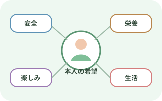
安全と本人の希望を同時に考える
口から食べることの意義
- 栄養
- 水分
- 楽しみ
- 生活のリズム
- 人とのつながり
本人の希望と合わせて検討
- 安全性
- 負担
- 得られる喜び
- 「食べたい」「この味が好き」という思いを確認する。
- 本人の思いを踏まえ、多職種で検討する。
摂食嚥下の5期
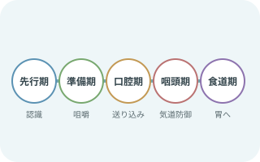
食べる前から食道通過まで続く
- 先行期：食物を認識する。
- 準備期：取り込み・咀嚼して食塊をつくる。
- 口腔期：舌が送る。
- 咽頭期：気道を守りながら通過する。
- 食道期：胃へ運ぶ。
むせ以外にも見る機能
- 食物認知
- 口唇閉鎖
- 咀嚼
- 舌の送り込み
- 食道通過
- むせは主に咽頭期の手がかりになる。
- ほかの段階にも問題は起こる。
KTBCで全体像を見る
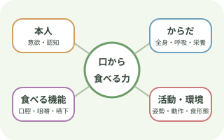
13項目を支援につなげる
包括的に見る領域
- 食べる意欲
- 全身状態
- 呼吸
- 口腔
- 食事中の認知
- 咀嚼
- 送り込み
- 嚥下
- 姿勢
- 耐久性
- 食事動作
- 活動
- 摂食状況
- 食物形態
- 栄養
- ここでは領域の概要を示す。
- 正式な13項目の採点には、KTBCの評価基準を用いる。
- 一つの合計点だけで決めない。
- 項目ごとの強みと課題を確認する。
- 介入前後の変化を比較する。
評価から支援へ
- 低い項目を「食べられない理由」と決めつけない
- 食べる力を妨げている、変えられる要因を探す
- 介入後に同じ視点で再評価し、効果と負担を比較する
- 正式な評価には最新版のKTBCと評価基準を用い、基準の文言を変えない
飲食物を使う前の確認
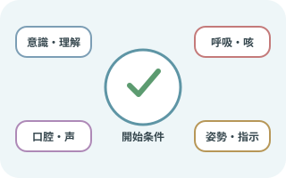
まず全身と口腔をみる
全身と口腔の確認
- 意識
- 覚醒
- 指示理解
- 呼吸状態
- 分泌物
- 咳
- 声
- 座位保持
- 口腔内
- 義歯
- 現在の食事指示
必要時にすぐ使える環境
- 吸引
- 酸素
- 緊急連絡
必要時に速やかに対応できるよう、環境を整える。
- 全身・呼吸
- 発熱
- 肺炎徴候
- 呼吸数
- 呼吸努力
- SpO2の変化
- 酸素需要の変化
- 分泌物と気道防御
- 湿性嗄声
- 弱い咳
- 頻回な咳払い
- 唾液の貯留
- 痰の増加
- 口腔機能と口腔内
- 開口
- 口唇閉鎖
- 舌運動
- 口腔乾燥
- 汚染
- 痛み
- 義歯の適合
- 姿勢と耐久性
- 頸部の安定
- 体幹の安定
- 疲労
- 食事中に保てる姿勢
- 指示と背景情報
- 絶飲食を含む指示
- アレルギー
- 食形態
- とろみ
- 薬剤
- 既往
評価の進め方
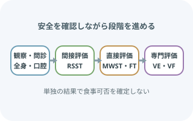
観察から始め、必要な評価へ進む
- 情報収集と全身・口腔観察
- 飲食物を使わない評価
- 条件を満たす場合の直接評価
- 必要時の専門的評価
- 一つのスクリーニング結果だけで、経口摂取の可否や食形態を確定しない。
- 嚥下内視鏡検査（VE）・嚥下造影検査（VF）で詳しく評価する項目の例
- 咽頭残留
- 喉頭侵入
- 誤嚥
- 代償手段の効果
- 専門的評価の必要性を検討する職種の例
- 医師
- 歯科医師
- 言語聴覚士
- 看護師
これらの職種などで検討する。
反復唾液嚥下テスト（RSST）

30秒間の空嚥下を数える
- 示指で舌骨、中指で甲状軟骨付近を触知する。
- できるだけ繰り返し唾液を飲み込んでもらう。
喉頭が十分に挙上し、指を越えた動きを1回として数える。
- 説明して姿勢を整える
- 覚醒と指示理解を確認し、頸部を触れることを説明する。
- 安全に座位または安定した体位をとる。
- 舌骨と甲状軟骨を触知
強く押さえず、嚥下時の上前方への動きを感じ取る。
- 30秒間測定
- 「できるだけ何度も唾を飲み込んで」と伝える。
- 確実な嚥下回数を数える。
- 結果を解釈
- 3回未満は嚥下障害を疑う所見。
- RSSTに影響する要因の記録
- 口腔乾燥
- 理解力
- 疲労
- これらの要因の影響も記録する。
- ほかの評価と合わせて解釈する。
改訂水飲みテスト（MWST）
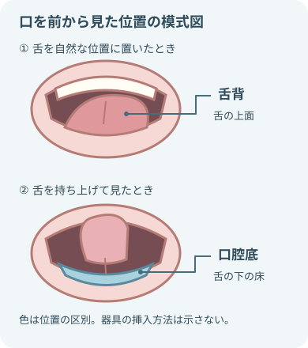
- 舌背は舌の上面、口腔底は舌の下の床にあたる。
- 図は位置の違いを示す。
- 検査時の姿勢、器具の向き、挿入深さを指定するものではない。
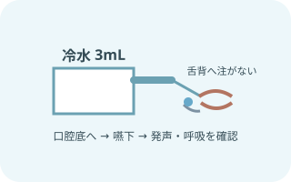
3mLの冷水で嚥下反応をみる
- 施設で訓練された実施者が行う。
- 冷水3mLを舌背ではなく口腔底へ入れる。
- 嚥下を指示する。
水を飲み込むときの観察
- 嚥下
- むせ
- 呼吸
- 湿性嗄声
- 実施条件を再確認直接評価の実施条件
- 直接評価が可能な状態か
- 姿勢
- 吸引
- 緊急対応
- 口腔内
- 冷水3mLを口腔底へ
- シリンジを深く入れず、舌背へ注がない。
- 注入後に嚥下を促す。
- 嚥下後の声と呼吸を確認発声後の観察
- むせ
- 咳
- 湿性嗄声
- 呼吸変化
- 追加嚥下
発声してもらい、嚥下後の反応を観察する。
- 標準の評価法で判定
- 4点以上なら最大2回追加し、最も低い点を結果とする。
- 異常時は反復しない。
フードテスト（FT）
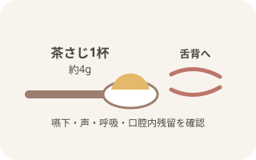
嚥下と口腔内残留をみる
- 施設の標準物性を満たすプリンなどを用いる。
- 量は茶さじ1杯、約4g。
- 舌背に置いて嚥下してもらう。
フードテストで確認する反応と残留
- むせ
- 呼吸
- 声
- 口腔内残留の位置
- 口腔内残留の量
- 食品と適応を照合食品と適応の確認
- アレルギー
- 食事指示
- 食形態
- 温度
- 量
- 姿勢
- 少量を舌背へ食物を置いた後の観察
- 口唇閉鎖
- 保持
- 送り込み
本人の反応を見ながら少量を舌背へ置き、観察する。
- 嚥下後を観察嚥下後の確認
- むせ
- 湿性嗄声
- 呼吸
- 複数回嚥下
- 口腔内残留
- 標準の評価法で判定
- 結果が良好な場合のみ最大3回まで行う。
- 実施した中で最も低い点を結果とする。
中止サインと評価の限界
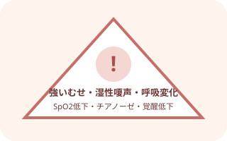
呼吸・声・意識の変化で止める
評価を中止するサイン
- 強いむせ
- 持続する咳
- 湿性嗄声
- 呼吸苦
- SpO2低下
- チアノーゼ
- 覚醒低下
- 食物保持
- 著しい疲労
これらの異常を認めたら評価を中止する。
- 評価を中止したら口腔内を確認する。
- 中止後の対応
- 安全な体位
- 排出
- 吸引
- 応援要請
これらの対応へ移る。
むせがなくても誤嚥は否定できない
- 不顕性誤嚥では咳が出ないことがある
- 小量の水では問題が見えず、食事量や疲労で変化することがある
- SpO2だけで誤嚥の有無を判定しない
- 専門評価を検討する所見
- 肺炎の反復
- 湿性嗄声
- 原因不明の発熱
- 食後の呼吸変化
KT介入を組み立てる
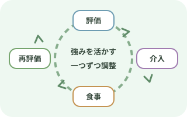
評価・介入・再評価をつなぐ
- 課題を一度に全部変えず、目的を決めて一つずつ調整する。
- 介入後の再評価
- 安全性
- 摂取量
- 疲労
- 本人の満足
効果がなければ元に戻し、別の要因を検討する。
- 覚醒しやすく、疲労が少ない時間を選ぶ
- 口腔の支援
- 口腔ケア
- 義歯
- 口腔乾燥
- 痛み
状態に合わせて整える。
- 姿勢を支える部位
- 体幹
- 骨盤
- 足底
- 頭頸部
本人に合わせて個別に安定させる。
- 食事介助の調整
- 一口量
- 速度
- 間隔
- 食具
- 介助位置
- 専門評価と指示に基づいて統一する項目
- 食形態
- とろみ
- 本人が食べやすい環境
- 静かな環境
- 見やすい配置
- 本人が選べる声かけ
- 食後の確認
- 口腔内残留
- 呼吸
- 声
- 姿勢
- 疲労
記録と共有
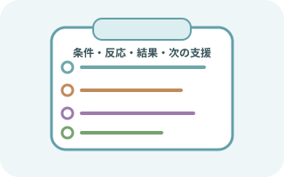
条件と反応をセットで残す
条件と反応の記録
- 覚醒
- 体位
- 食品
- 物性
- 量
- 介助方法
- 各テスト結果
- むせ
- 声
- 呼吸
- 残留
- 摂取量
- 疲労
- 中止理由
うまくいった条件も共有し、次の食事で再現できるようにする。